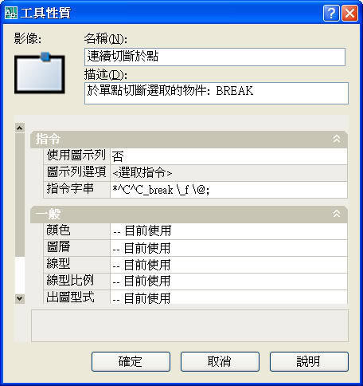
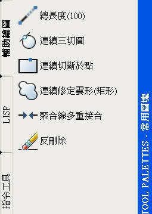

事半功倍的工具選項板_巨集篇
有時候在使用CAD本身的指令功能時，常常會花很多步驟而且也無法連續使用，這時候透過 工具選項板 及可結省很多繪圖步驟喔。
以下提供了5個範本供家族朋友參考:
1. AutoCAD 2006 以上版本:
請先將 工具選項板 → 指令工具 → VisualLisp 表示式.....複製後再貼上到選項板上，再改名稱、指令字串及指定影像。
滑鼠右鍵複製

貼上到選項板上

滑鼠右鍵性質，再改名稱、指令字串及指定影像

2. AutoCAD 2004 及 AutoCAD 2005 請使用以下方法新增:
下拉式功能表「檢視」→「工具列」→ 「指令」標籤 → 「使用者定義」.....將 使用者定義按鈕 按住左鍵拖放到 選項板 即可。
Q:三切圓:這是功能表透過巨集的功能，但是無法連續使用!
A:可透過 工具選項板 自行開發一個 連續三切圓 的工具。

指令字串 *^C^C_circle _3p _tan \_tan \_tan \
PS:結束指令請按 [Esc]鍵。
Q:切斷於點:這是工具列按鈕透過巨集的功能，但是無法連續使用!
A:可透過 工具選項板 自行開發一個 連續切斷於點 的工具。

指令字串 *^C^C_break \_f \@;
PS:結束指令請按 [Esc]鍵。
Q:修定雲形:必須先有矩形(聚合線)，才能使用物件來轉換成修定雲形，繪圖步驟繁瑣!
A:可透過 工具選項板 自行開發一個 連續修定雲形(矩形) 的工具。

指令字串 *^C^CRECTANG;\\REVCLOUD;;L;;
PS:結束指令請按 [Esc]鍵。
Q:聚合線多重接合:在作接何時要輸入許多選項，繪圖步驟繁瑣!
A:可透過 工具選項板 自行開發一個 聚合線多重接合 的工具。

指令字串 ^C^CPEDITACCEPT;1;SELECT;\PEDIT;M;P;;J;1;;PEDITACCEPT;0;
PS:指令操作只需直接框選物件即可完成。
Q: 反刪除:CAD的本身只有刪除指令，當需要反刪除(選取物件變成保留物件)，操作步驟就很麻煩。
A:可透過 工具選項板 自行開發一個 反刪除 的工具。

指令字串 ^C^CSELECT;\ERASE;ALL;R;P;;
PS:指令操作跟刪除一樣，只是選取物件變成保留物件，其餘物件全部刪除。

下載載點： https://pse.is/GYYVG